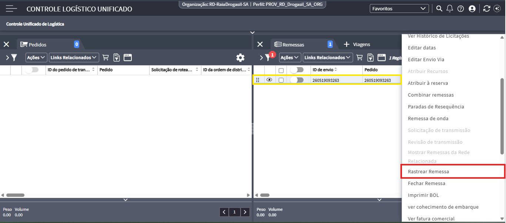
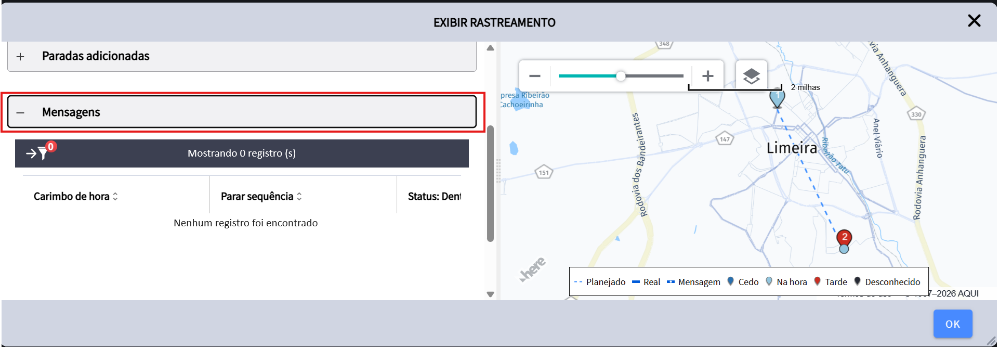
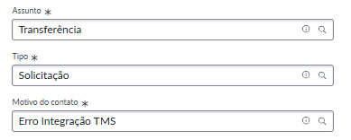

Erro de integração no TMS
A tabulação "Erro de Integração no TMS" deve ser utilizada quando os pedidos não são enviados às transportadoras, devido a uma falha vinculada ao TMS. A identificação desse erro deve ser realizada no Manhattan, adicionando o pedido na Remessa e realizando o rastreamento da remessa. Caso não haja nenhuma informação na aba Mensagens, significa que houve um erro na distribuição dos pedidos.
Informações necessárias:
🔹Número do pedido
🔹Print do Manhattan
Como verificar se existe erro na integração pelo Manhattan
1º Passo: Clicando com o botão direito do mouse no pedido, irá aparecer a opção "Rastrear remessa"

2º Passo: Na parte de mensagens irá mostrar o histórico de registros do TMS, se constar como 0 registros é porque foi integrado incorretamente no sistema

Como abrir a solicitação
